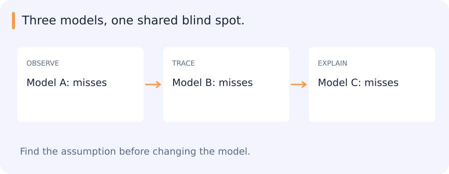

Suppose a detector has proposed many vehicle boxes. For each box you have a score, an estimated size and a label saying whether the box is correct. A decision tree learns a sequence of questions about those features. Combining several trees can change the stability and errors of the resulting predictions. Start with one split so that the combination has something concrete to build on.
Jump to a concept
A tree partitions feature space
Follow a new box to a prediction
Imagine a tiny tree whose first question is whether the detector score is at least 0.5. A score of 0.65 goes right. The next question on that branch asks whether the box is at least ten pixels wide. If the box is only eight pixels wide, it takes the other branch and reaches a leaf. A leaf is where the questions stop and the prediction comes from.
Suppose two training boxes reached that leaf and only one was correct. The leaf can return a correctness score of 1/2. A different leaf might contain four correct boxes and return 1. That apparent certainty depends on four examples. Test it on other scenes before treating the score as a probability you can act on.
To build a tree, the algorithm looks at the available training labels and tests possible questions. A good question tends to move different labels into different branches. The next calculation measures that separation for one candidate question. After a split, each branch can consider its own next question. This is how a tree can learn that size is useful at low scores and much less useful at high scores.
A decision tree recursively chooses a feature and threshold to split observations into more homogeneous subsets. Classification commonly reduces Gini impurity or entropy; regression reduces squared-error variation. A leaf stores a prediction or class distribution. Greedy local split selection does not guarantee a globally optimal tree. Restrict depth, minimum leaf size or pruning to control variance. Threshold rules can capture interactions without explicit polynomial features, but extrapolation beyond observed values is limited.
A deep tree can memorize small data changes. Missing-value routing and categorical-feature handling depend on the implementation and must match inference. Impurity-based importance can favor high-cardinality features and does not establish causality. Permutation importance on independent data asks how predictions suffer when a feature is disrupted, but correlated features can share or hide their importance. Feature selection and importance-driven redesign can leak validation information if repeated without a fresh evaluation plan.
Work through the first split
Suppose six detector candidates have scores 0.2, 0.3, 0.4, 0.6, 0.7 and 0.9. Their correctness labels are false, false, true, false, true and true. The root contains three of each label. A split at score 0.5 puts two false and one true on the left, and one false and two true on the right. Each child is more concentrated in one label than the root. A tree can test another feature, such as object size, separately inside each child.
Gini impurity uses , where the probabilities are observed class proportions in the node. The root has impurity 0.5. Both children have impurity , so this split lowers weighted impurity by about 0.056. A fitting algorithm evaluates candidate splits and chooses one according to its criterion. It may find a better threshold than this example. A small leaf can appear very pure by chance, which is why depth and leaf-size limits are useful model settings.
Self-check
A node contains three positives and three negatives. Which child split makes both children pure?
- A. Each child holds equal counts of both labels
- B. One child holds all positives and the other all negatives
- C. Each child has two examples of one label and one of the other
- D. All examples remain in one child
Show answer and explanation
B. One child holds all positives and the other all negatives
A pure node contains one label. A split that separates the two labels gives zero impurity in each child.
Bagging and random forests
Why two trees disagree about the same box
Suppose the training list has six examples A through F. Draw six times from that list, allowing repeats. You might get A, A, C, D, F, F. Another draw could give A, B, C, C, E, F. Both draws have six rows but emphasize different examples. These are bootstrap samples. A tree fitted to the first draw can choose a different first question from one fitted to the second.
If one tree returns 0.8 for a new box and the other returns 0.4, averaging their scores gives 0.6. A third tree can move that average again. If every tree makes the same mistake on the box, averaging preserves it. A random forest encourages a wider range of decisions by giving each split a random subset of features to consider.
Example B was absent from the first draw. The first tree can contribute to B's out-of-bag prediction, while the second tree cannot. With many trees you can average the predictions from trees that did not train on B. If B is a video frame and a near-identical frame is in the draw, B is still easier to predict than a frame from a new recording. Use held-out recordings for that comparison.
Bagging trains models on bootstrap samples and averages their predictions. Averaging reduces variance when errors are not perfectly correlated. A random forest additionally samples candidate features at splits to diversify trees. More trees often stabilize the average but increase memory and inference cost. Out-of-bag predictions use trees that did not train on a given row, providing an internal diagnostic; they do not repair leakage between correlated rows or a mismatch with the deployment population.
For independent estimators of variance sigma squared, averaging M estimators would give variance sigma squared/M. Correlation adds a nonvanishing term, which explains why identical trees give little gain. Ensemble quality depends on both useful members and complementary errors, not diversity alone.
Boosting
Boosting adds weak predictors sequentially, each addressing shortcomings of the current combined model. AdaBoost reweights observations so misclassified cases receive more attention. For binary labels in {-1,+1}, if e is the current weighted error, a common weak-learner weight is , with a corresponding exponential reweighting. A learner at chance provides little useful weight; mislabeled outliers can attract excessive attention. The formula assumes its stated setup and needs numerical handling at zero error.
Gradient boosting fits each new learner to a negative gradient of the chosen loss with respect to current predictions. For squared loss this resembles fitting residuals. For logistic classification, the gradient is computed in score space and is not simply a hard-label mistake indicator. Learning rate, tree complexity and number of rounds jointly control capacity. Early stopping chooses a round using validation data, making that validation set part of model selection.
What does the next tree learn?
For a simple regression example, imagine predicting prices 100, 120 and 180 for three observations. Start by predicting their mean, about 133.3, for all three. The residuals are about −33.3, −13.3 and +46.7. A small tree can group some of those residuals and predict a correction for each group. Adding a fraction of its output moves the ensemble in a direction that reduces squared loss.
The second tree is trained on a problem defined by the current model's errors. With another loss, the corrections are based on the corresponding negative gradient, rather than necessarily the raw residual. This explains how gradient boosting differs from a forest trained by sampling independent trees and averaging them. The learning rate controls the size of each correction. A small rate usually requires more rounds, and validation-based stopping is one way to choose how long to keep adding trees.
Self-check
For squared-error gradient boosting, what does the next regression tree learn to approximate?
- A. The feature means across all examples
- B. Residual corrections to the current ensemble
- C. A fresh random labeling of the data
- D. A separate prediction that will replace every earlier tree
Show answer and explanation
B. Residual corrections to the current ensemble
For squared error the negative gradient is the residual. The next tree contributes a correction to the current prediction.
XGBoost and LightGBM
XGBoost combines regularized tree boosting with efficient split search, missing-value handling and first/second-order loss information in common objectives. LightGBM emphasizes histogram-based training and leaf-wise tree growth, with techniques intended to reduce work on large datasets. Leaf-wise growth can expand a highly profitable branch deeply, so limiting leaves, depth and minimum data per leaf matters on small datasets. These are different implementations of related ideas, not universal speed or accuracy rankings.
Compare wall time and memory under your data size and hardware, using consistent stopping criteria and search effort. Record whether a run uses CPU or GPU and which representation is measured. A newer boosting library does not compensate for a weak split design. Trees often work well on tabular engineered features, while a frozen image encoder can provide features a tree cannot invent from a few raw pixels.
Voting, blending and stacking
Hard voting combines class decisions; soft voting averages scores/probabilities whose interpretation and calibration need attention. Blending fits a combination on a held-out subset. Stacking learns a meta-model from out-of-fold base-model predictions so it sees predictions made without training on those same targets. Training a meta-model on in-sample base predictions encourages it to trust overfit behavior. Group boundaries apply to the folds of every layer.
Measure the cost of the whole ensemble, including all feature extractors, preprocessing, model loads and output merging. A second model is worthwhile only if its gain at the relevant operating point justifies the latency, memory and maintenance. In detection rescoring, distinguish changing scores from adding proposals: a rescorer cannot recover an object absent from the frozen detector's candidate set.
What an ensemble can learn from disagreement
Three truck classifiers agree on most easy examples. They also all miss cement trucks. Combining their votes does not recover a category that none of them recognizes.

An ensemble is more useful when its members make different, informative errors. For example, a model that handles unusual truck shapes may correct mistakes made by a model that is otherwise stronger. The gain depends on those particular disagreements and their frequency in the target data.
Bagging, random forests and boosting create and combine predictors in different ways. Their value becomes clearer when we examine what each member contributes.
What a useful comparison shows
For the rescorer, a small comparison can include a shallow tree, a forest and one boosted model. Their operating points, runtime and disagreement examples explain more than a single winner. The frozen detector also sets a boundary on the experiment: changing scores may improve which candidates survive, but cannot recover an object that never entered the candidate set.
Original source references and provenance
Original teaching text covering the cited topics, not a verbatim mirror. These references are provenance; no external reading is required to use this chapter.
- http://www.ai.mit.edu/courses/6.867-f04/lectures/lecture-10.pdf
- http://www.ai.mit.edu/courses/6.867-f04/lectures/lecture-9.pdf
- https://claude.ai/public/artifacts/c94c29e8-23f4-43ee-9fcd-092c46957aab
- https://developers.google.com/machine-learning/decision-forests
- https://github.com/rasbt/stat479-machine-learning-fs19/blob/master/06_trees/06-trees__notes.pdf
- https://github.com/rasbt/stat479-machine-learning-fs19/blob/master/07_ensembles/07-ensembles__notes.pdf
- https://medium.com/@abhaysingh71711/lightgbm-explained-faster-and-smarter-gradient-boosting-4ab549629925
- https://medium.com/@abhishekjainindore24/different-types-of-ensemble-techniques-bagging-boosting-stacking-voting-blending-b04355a03c93
- https://www.nvidia.com/en-eu/glossary/xgboost/